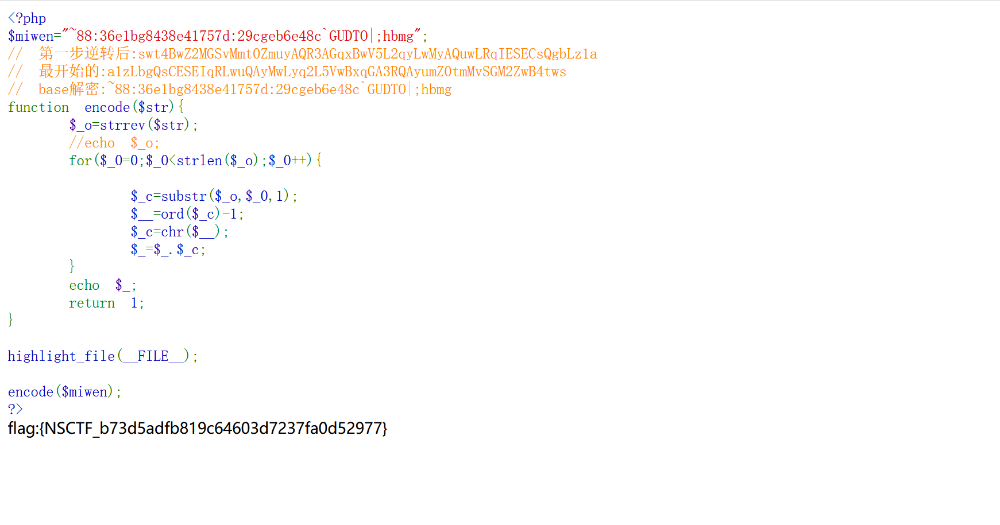

题目描述：
解密
题目解题：
打开题目开始审计代码
1
2
3
4
5
6
7
8
9
10
11
12
13
14
15
16
17
18
19
20
21
22
| <?php
$miwen="a1zLbgQsCESEIqRLwuQAyMwLyq2L5VwBxqGA3RQAyumZ0tmMvSGM2ZwB4tws";
function encode($str){
$_o=strrev($str);
for($_0=0;$_0<strlen($_o);$_0++){
$_c=substr($_o,$_0,1);
$__=ord($_c)+1;
$_c=chr($__);
$_=$_.$_c;
}
return str_rot13(strrev(base64_encode($_)));
}
highlight_file(__FILE__);
?>
|
先解释一下各个函数用法
strrev— 反转字符串
1
2
3
4
5
6
7
8
| 说明
string strrev (string $string)
返回 `string` 反转后的字符串。
参数
string
待反转的原始字符串。
返回值
返回反转后的字符串。
|
1
2
3
4
| Example
<?php
echo strrev("Hello world!");
?>
|
substr — 返回字符串的子串
1
2
3
4
5
6
7
8
9
10
11
12
| 说明
string substr( string $string, int $start[, int $length] )
返回字符串 string 由 start 和 length 参数指定的子字符串。
参数
string
输入字符串。必须至少有一个字符。
start
如果 start 是非负数，返回的字符串将从 string 的 start 位置开始，从 0 开始计算。例如，在字符串 "abcdef" 中，在位置 0 的字符是 "a"，位置 2 的字符串是 "c" 等等。
如果 start 是负数，返回的字符串将从 string 结尾处向前数第 start 个字符开始。
如果 string 的长度小于 start，将返回 FALSE。
|
1
2
3
4
5
6
| Example
<?php
$rest = substr("abcdef", -1);
$rest = substr("abcdef", -2);
$rest = substr("abcdef", -3, 1);
?>
|
ord — 返回指定字符的ASCII码
chr — 返回指定的字符
由此我们理一下思路，这里他的函数是将传入的字符，先进行逆转，随后将每个字符的ascii值增了1，接着先base64编码，在逆转，在rot13加密，那我们逆着将题目做一遍即可得到flag
也就是，先将待解密的密文rot13解密
接着将得到的字符逆转一下，在base64解密
可见flag已经初具雏形，接着在逆转字符，然后令每个字符的ascii值减1，这里减1与逆转的步骤可以翻一下，不影响，最终得到flag
